臼井社宅28棟（2000年3月撮影） 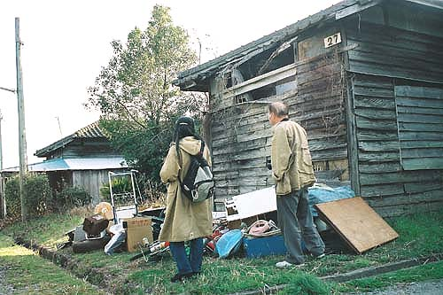 臼井社宅27棟（2000年3月撮影） 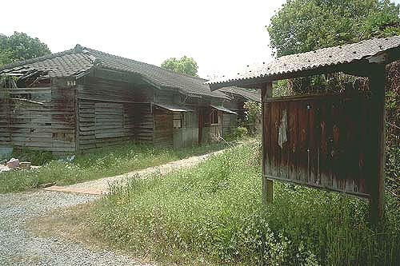 臼井社宅27棟(2000年5月Ｔさん撮影) 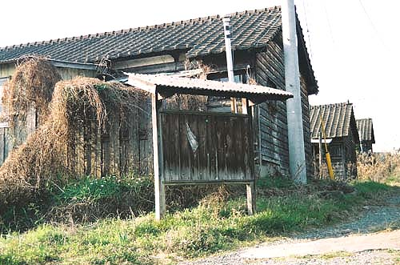 臼井社宅（2000年3月撮影） 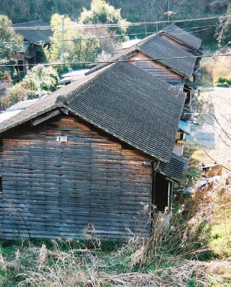 臼井社宅15棟（2000年3月撮影） 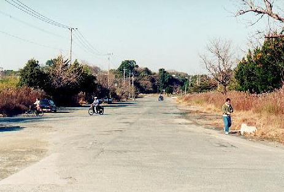 （1997年1月kuriさん撮影） BACK NEXT
臼井社宅27棟（2000年3月撮影） 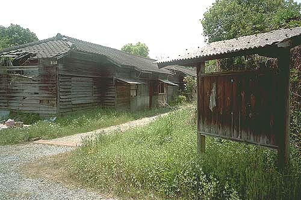 臼井社宅27棟(2000年5月Ｔさん撮影) 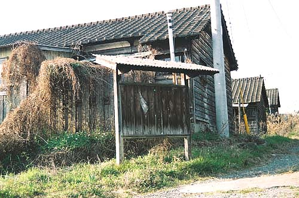 臼井社宅（2000年3月撮影） 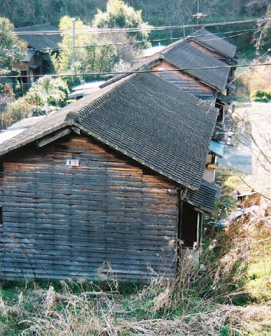 臼井社宅15棟（2000年3月撮影） 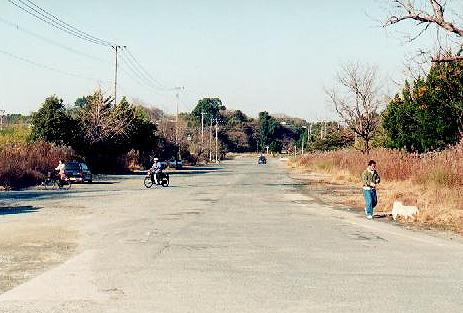 （1997年1月kuriさん撮影） BACK NEXT
臼井社宅27棟(2000年5月Ｔさん撮影) 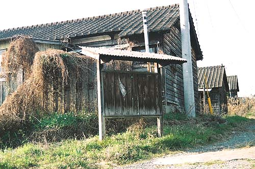 臼井社宅（2000年3月撮影） 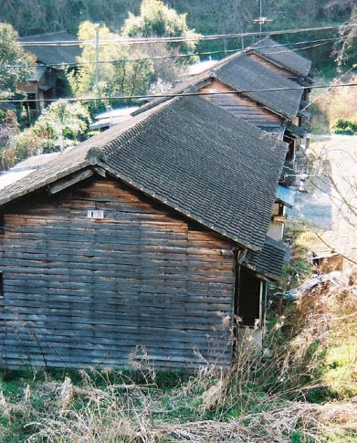 臼井社宅15棟（2000年3月撮影） 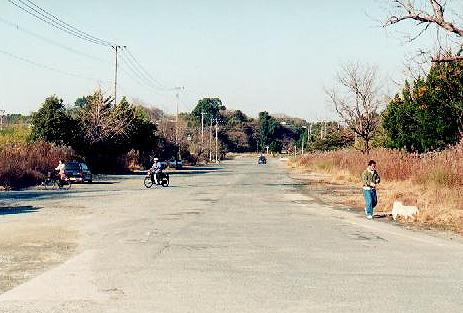 （1997年1月kuriさん撮影） BACK NEXT
臼井社宅（2000年3月撮影） 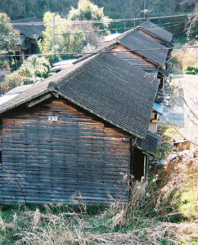 臼井社宅15棟（2000年3月撮影） 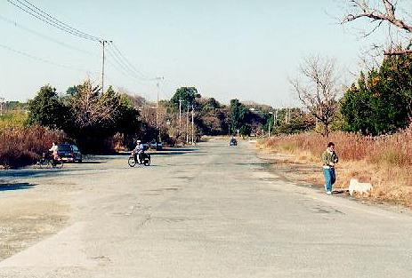 （1997年1月kuriさん撮影） BACK NEXT
臼井社宅15棟（2000年3月撮影） 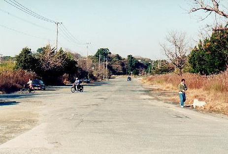 （1997年1月kuriさん撮影） BACK NEXT
（1997年1月kuriさん撮影） BACK NEXT